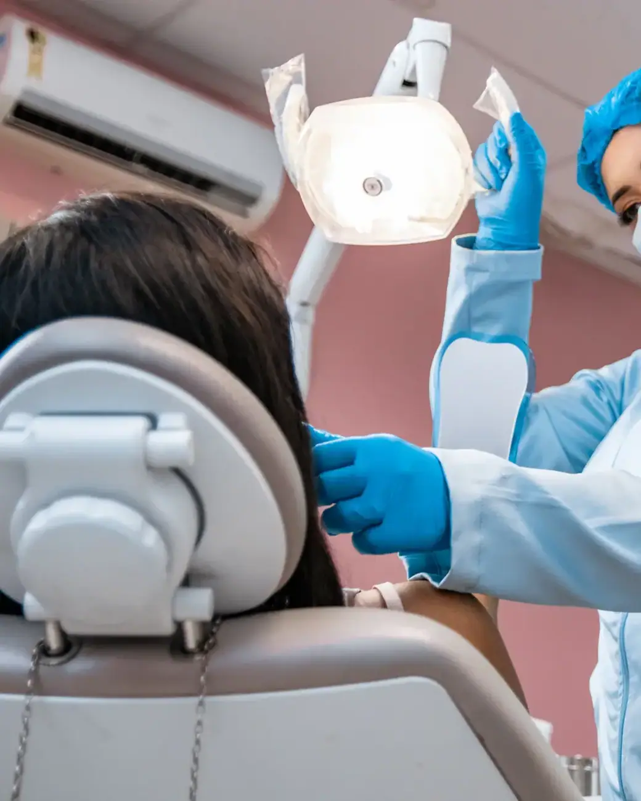
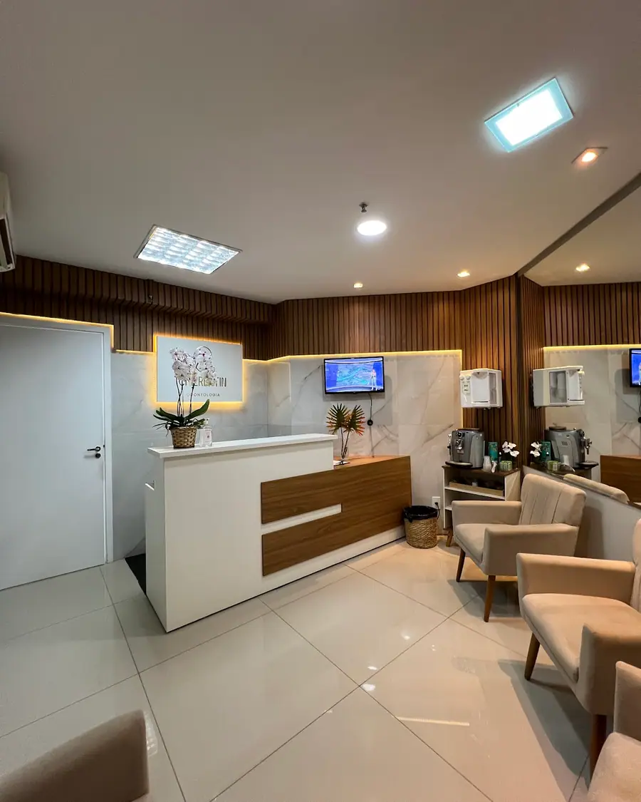

01
Implantes dentários
Reposição de dentes perdidos com implantes, devolvendo firmeza para mastigar e segurança para sorrir.
Agendar avaliaçãoOdontologia e estética no Centro · Ribeirão Preto
Implantes, próteses, ortodontia, placa de bruxismo e clareamento num consultório que tira o medo de dentista de quem chega traumatizado. Nota 4,9 com 161 avaliações no Google.

Sem trauma de dentista
Escolha o tratamento e fale direto com a equipe da Clínica Chierentin. A mensagem já vai pronta no WhatsApp.
Reposição de dentes perdidos com implantes, devolvendo firmeza para mastigar e segurança para sorrir.
Agendar avaliação
Próteses fixas e removíveis para recuperar a mastigação, a fala e a confiança no sorriso.
Agendar avaliação
Ortodontia para alinhar os dentes e corrigir a mordida, com manutenção e acompanhamento até o fim.
Agendar avaliação
Dentes mais claros com técnica indicada para o seu caso, depois de avaliar a saúde da gengiva e do esmalte.
Agendar avaliação
Endodontia para salvar o dente e acabar com a dor, com anestesia e acompanhamento em cada sessão.
Agendar avaliação
Consulta completa, limpeza, restaurações e prevenção. É por aqui que todo tratamento bem-feito começa.
Agendar avaliação
A equipe da Dra. Juliana Chierentin explica cada etapa com paciência, planeja com escaneamento digital e cuida de você do implante à placa de bruxismo — sem pressa e sem surpresa.
Sem complicação: você conversa, entende o seu caso e só então decide.
Conte o que está sentindo ou o que quer melhorar no sorriso. A equipe responde e encontra o melhor horário para você.
O dentista examina, conversa com você e explica as opções de tratamento, com o plano e as etapas por escrito.
Você decide com calma e é acompanhado em cada sessão, até o resultado final.
Atendimento com hora marcada
Depoimentos reais de pacientes publicados no Google Maps.
“A Dra. Naty tirou meu trauma com dentista, ela é muito paciente, empática, cuidadosa, não tenho palavras para descrever o atendimento dela.”
“Conheci a Dra Juliana em um momento de crise. Fui muito bem acolhido e os cuidados foram assertivos. A partir de então sou seu cliente assíduo, indiquei para minha família. Atendimento de muita qualidade, respeito e profissionalismo.”
“Só tenho elogios, Dr. Carlos é um excelente profissional, muito educado, calmo, gentil e simpático, já fiz um procedimento com ele, e agora estou fazendo outro, pois não tem como fazer com outro profissional, depois que conheci ele !”
“Excelente atendimento desde a recepção com a Mari até o atendimento com a Dra. Natiely. Muito atenciosas, ambiente limpo e organizado. Me sinto muito confortável quando venho ao retorno para realizar a manutenção do aparelho. Recomendo muito a clínica!”
“Excelente atendimento! O trabalho da Dra. Juliana Chierentin é muito bom, sempre fui muito bem atendido. Toda a equipe é muito atenciosa e gentil, especialmente a recepcionista. Sempre fui muito bem recebido e só tenho elogios. Recomendo!”
Não achou sua dúvida? Pergunte direto para a equipe no WhatsApp.
A Clínica Chierentin fica na R. Visc. de Inhaúma, 580, Centro, em Ribeirão Preto (SP), CEP 14010-100. Pelo botão "Traçar rota" nesta página você abre o caminho direto no Google Maps.
Sim. O atendimento é com hora marcada: chame no WhatsApp (16) 98839-9355 e a equipe encontra o melhor horário para você.
É só chamar no WhatsApp (16) 98839-9355 pelo botão "Agendar avaliação". A equipe responde, tira suas dúvidas e marca o melhor horário para a sua avaliação.
Implantes dentários, Próteses dentárias, Aparelho ortodôntico, Clareamento dental, Tratamento de canal e avaliação e clínico geral. O tratamento indicado para você é definido na avaliação.
O procedimento é feito com anestesia local, então você não sente dor durante a cirurgia. Nos dias seguintes pode haver um leve incômodo, controlado com as orientações e a medicação indicadas pelo dentista.
Depende de quantos dentes faltam e da saúde da boca e do osso. Existem próteses removíveis, fixas e as fixas sobre implantes, como o protocolo. A indicação é feita depois da avaliação.
Depende de cada caso, mas a maioria dos tratamentos leva entre um e três anos. Na avaliação o ortodontista mostra uma estimativa para o seu sorriso.
Com bons hábitos, o resultado costuma durar de um a três anos. Café, vinho, cigarro e a falta de limpeza regular encurtam esse tempo. O dentista indica a técnica e a manutenção certas para o seu caso.
Agende sua avaliação na Clínica Chierentin em poucos minutos pelo WhatsApp.